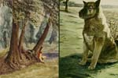
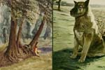

Working In Different Mediums
 



Water Color
watercolor paints come in a huge variety of colors and quality. I believe the best attribute of the watercolor medium, is it's portability. A small duffle bag is all you need to store all the tools for a pointing. hiking out far to find that perfect scene is not a hassle, your other gear will take up more space, food, drink extra clothing, music player. It important to remember that your comfort while out in nature should be a priority, if you are focusing on how sore your legs are getting or how hot or cold it is instead of the colors in front of you, that can make for a negative experience.
Oils
Oil color painting's benefits to me are the drying time of the paint, as you can easily "fix" areas that need to be reworked. getting that eye even on both sides of the face is as easy as wiping away with a cloth and re-sketching a new one. The drying time can also be minus for some as an accidental swipe from your pinky can un-render your perfectly placed eyeball.